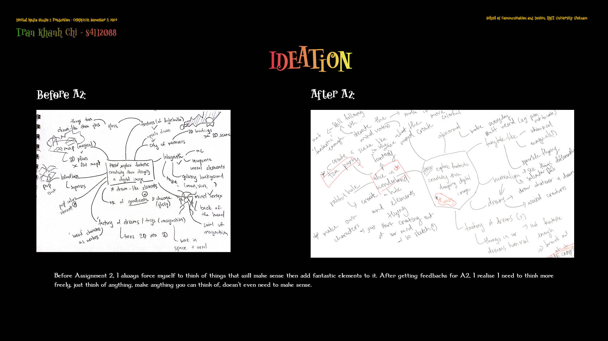
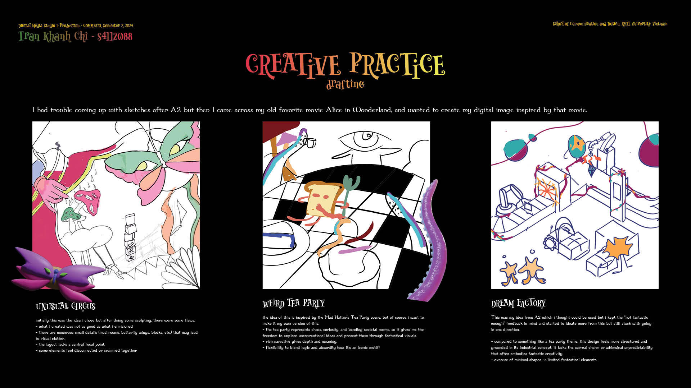
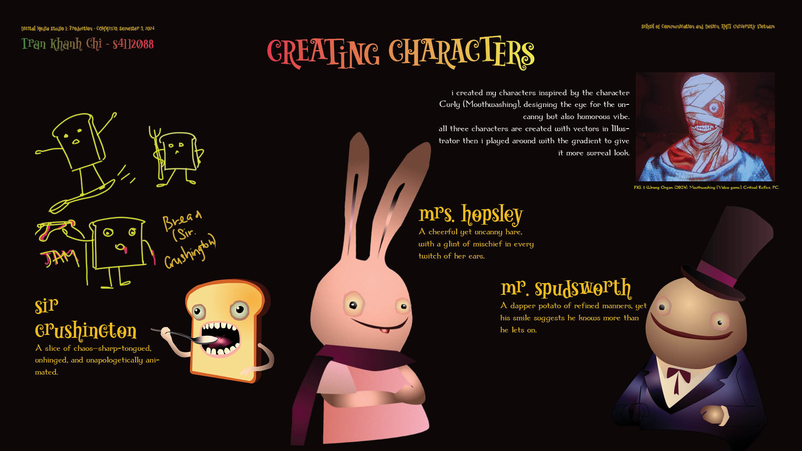
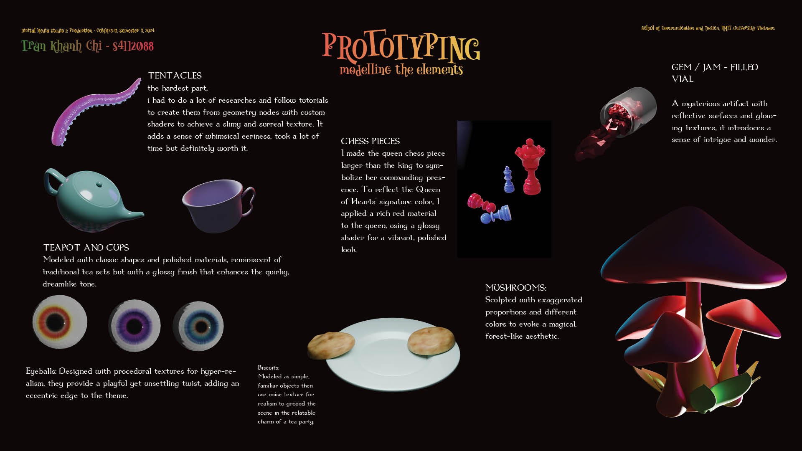
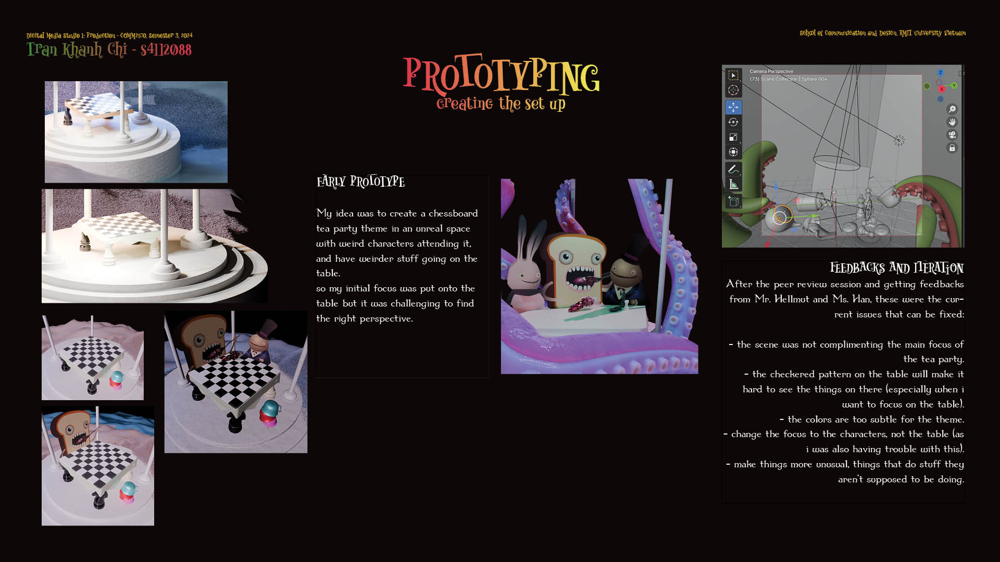
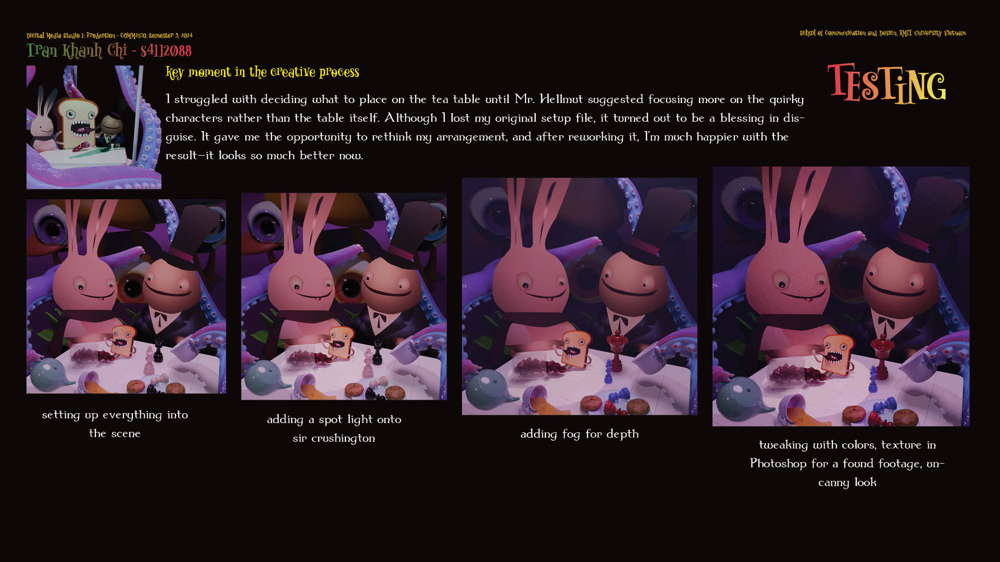

Uninvited Guest
A surreal, Alice-in-Wonderland–inspired tableau with playful characters, unusual props, and narrative-driven visuals.
This project explores fantastic creativity through the design of a surreal digital image. Inspired by the whimsical absurdity of Alice in Wonderland, the work combines playful character designs, unusual props, and narrative-driven visuals to blur the line between the ordinary and the extraordinary.
Through a process of ideation, prototyping, key preference studies, and testing, the project developed into a narrative tableau where strange guests disrupt the familiar. Characters like the stitched rabbit figures and animated objects embody curiosity, chaos, and unexpected humor.
The final outcome visualizes how imagination can turn the mundane into something fantastical, using digital art techniques to craft an immersive and theatrical atmosphere. Ultimately, Uninvited Guest demonstrates how design can transform abstract ideas into experiential storytelling that sparks wonder.
Process
Kicked off with moodboards and quick thumbnails to lock tone: whimsical, surreal, and a little unsettling.
Refined composition and character placement to balance focal points and narrative flow.
Developed props and characters; tested color accents that guide the eye without flattening depth.
Iterated on lighting to push contrast and silhouette readability; tuned materials for story texture.
Blocked the scene, adjusted staging for a clearer entrance path for the ‘uninvited’ elements.
Final composite: added micro-contrast, edge control, and subtle VFX to tie the tableau together.